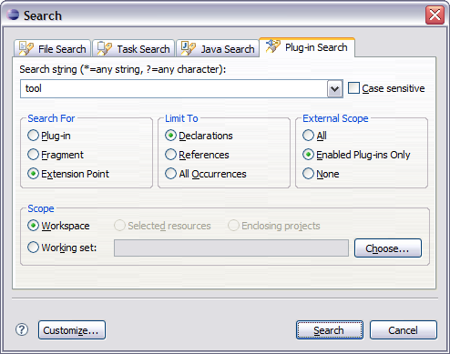
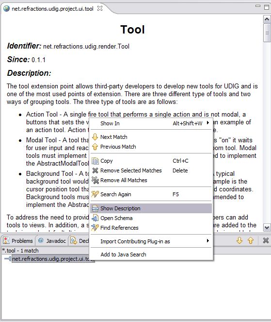

2 Extension Point Reference
The uDig extention Point list is published online:
SDK Search
The same information is included as part of your SDK, to locate an extension point definition:
- Select Search > Search... from the menu bar
- Change to the Plug-in Search Tab
- Search string: tool
- Search for: Extention Point
- Limit To: Declarations
- External Scope: Enabled Plugin-ins only
- Scope: Workspace

- Press the Search button
- The Search view is opened showing the results of your query
- Right click on net.refractions.udig.project.ui.tool and select Show Description

(c) Copyright (c) 2004-2008 Refractions Research Inc. and others.
[wiki]